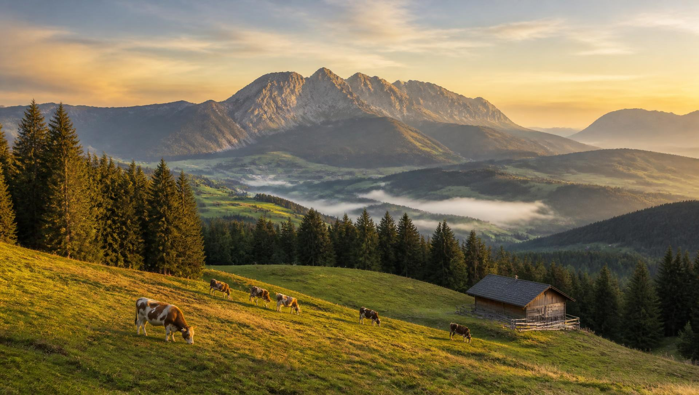
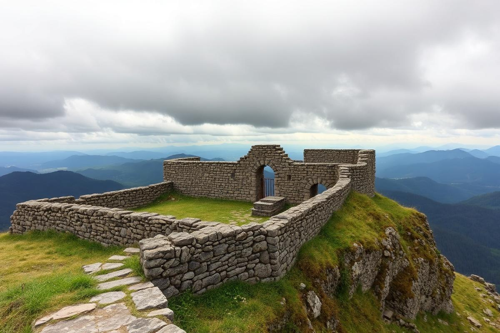

Asiago
1.001mIl capoluogo dell'Altopiano: il Corso, il Sacrario militare del Leiten, l'Osservatorio astrofisico e il formaggio DOP che porta il suo nome. Punto di partenza naturale per ogni escursione.
Altopiano dei Sette Comuni · Veneto

Sentieri, malghe, trincee della Grande Guerra, neve e sagre. Una guida indipendente aggiornata ogni giorno, con Nando che risponde alle tue domande.
Il territorio
Un tavolato calcareo a mille metri sopra la pianura veneta, dove i pascoli d'alta quota confinano con le abetaie e con le trincee del 1916. Asiago è il cuore commerciale, Gallio la porta delle malghe e della neve, Roana il paese cimbro dei ponti e delle contrade. TUTTOALTOPIANO mette insieme quello che serve davvero: sentieri, orari, meteo, sapori e memoria.
Il capoluogo dell'Altopiano: il Corso, il Sacrario militare del Leiten, l'Osservatorio astrofisico e il formaggio DOP che porta il suo nome. Punto di partenza naturale per ogni escursione.
Il paese delle malghe e della neve: da qui si sale a Melette e Campomulo, cuore dello sci di fondo dell'Altopiano, tra pascoli, contrade e trattorie di montagna.
Il comune cimbro per eccellenza, con le frazioni di Mezzaselva, Canove, Camporovere e Cesuna. Qui si conserva la lingua cimbra e il celebre Ponte di Roana.
Terra del patatino di Rotzo, con l'altura di Castelletto e le viste sulla Val d'Astico.
Consigli di oggi · lunedì 23 novembre
Il grande monumento bianco che custodisce oltre 50.000 caduti della Grande Guerra.
La "piccola Finlandia" d'Italia: torbiere, abetaie e praterie a 1.300 metri.
Viadotto storico sospeso sulla Val d'Assa, simbolo dell'ingegneria di inizio Novecento.
Tre temi, tre stagioni



Neve
Campomulo, Marcesina e le piste dell'Altopiano.
Meteo e neve in diretta
Aggiornato: 15:15 · Open-Meteo
Dati aggiornati ogni 30 minuti.
Assistente locale · la posta di Nando
Nando è la guida virtuale dell'Altopiano: gli chiedi che sentiero fare con la pioggia, dove mangiare in malga o come arrivare senza auto, e ti risponde in un attimo.
Parla con NandoEscursioni
| Sentiero | Difficoltà | Tempo |
|---|---|---|
| Anello del Monte Zebio | Facile | 2h 30' |
| Cima Portule dalla Bocchetta Portule | Medio | 4h 30' |
| Anello della Marcesina | Facile | 2h 45' |
| Sentiero delle Calà - Val Frenzela | Impegnativo | 3h 30' |
| Monte Fior e Castelgomberto | Medio | 3h 45' |
Agenda
| Quando | Evento |
|---|---|
| Dicembre | Mercatini di NataleAsiago, Gallio, Canove |
| 31 dicembre | Capodanno in piazzaAsiago |
| Gennaio - febbraio | Gran Fondo Val FormicaCampomulo (Gallio) |
| Febbraio | Carnevale cimbroRoana e frazioni |
| Maggio - giugno | Risveglio delle malghePascoli di Gallio ed Enego |
Da 1 a 3 giorni
1 giorno · Prima volta
Il giro classico tra Asiago, Gallio e Roana per chi ha solo una giornata.
2 giorni · Famiglie
Percorsi facili, animali, parco avventura e una serata sotto le stelle.
2 giorni · Storia
Trincee, sacrari e musei per capire il fronte dell'Altopiano.
3 giorni · Escursionisti
Le cime maggiori dell'Altopiano, dormendo tra Gallio e Asiago.
2 giorni · Inverno
Fondo a Campomulo, discesa al Kaberlaba e ciaspole in Marcesina.
2 giorni · Coppie
Foliage, mercatini del formaggio e passeggiate senza fatica.